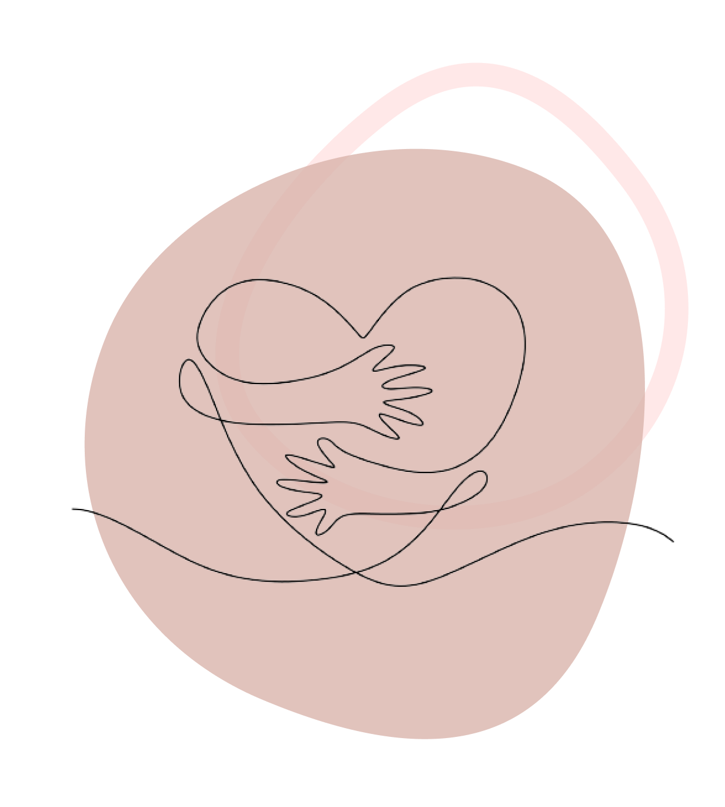

Como ajudar?
Faça uma doação e mantenha e projeto vivo!
Ao fazer uma doação, você está contribuindo diretamente para:
- 1. Manutenção do Site: Garantindo que nosso site permaneça acessível a todos que precisam;
- 2. Desenvolvimento Contínuo: Capacitando-nos a expandir nossos recursos, oferecendo ainda mais suporte emocional e informativo.
- 3. Apoio à Comunidade: Facilitando o acesso a serviços de aconselhamento, grupos de apoio e outros recursos essenciais para pais e famílias em luto.
Sua doação, independentemente do tamanho, faz a diferença. Cada contribuição é um gesto de solidariedade e empatia que ecoa através das histórias de todos aqueles que encontram conforto neste espaço.

Aqui está o pix para realizar a doação
Cole o código na opção do app “pix copia e cola “ ou escaneie o nosso QR Code.
00020126360014BR.GOV.BCB.PI X0114+55819960649445204000 053039865802BR5925Flavio Hen rique Ferreira 6009SAO PAULO6 2140510YoCItibWGf630462F8